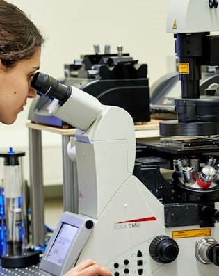

Julia Gala de Pablo, PhD
-
Undergraduate studies
In 2008 I joined a BSc degree in Physics at the University Complutense of Madrid. A year later, I joined a BSc in Biochemistry, and I studied both simultaneously. In 2012, I obtained the Erasmus Mundus scholarship and moved to Leeds for a year, where I joined the Molecular and Nanoscale Physics research group (University of Leeds) for a summer research scholarship. Years later, after finishing my BsCs (2015) I returned to the University of Leeds for a PhD.

I studied a Physics BSc and a Biochemistry BSc at the University Complutense of Madrid (Spain 2009-2015).

At the University of Leeds, I worked with an integrated confocal fluorescence and Raman microscope.
-
Doctorate degree
I joined MNP (University of Leeds) in 2015 as a PhD student, graduating on 2019. During my PhD, I used Raman spectroscopy for biochemical phenotyping of live single-cells of different stages of colorectal cancer (Journal of Raman spectroscopy, 2018).
-
I also studied the accumulation and photoactivation of a photosensitiser in single colorectal cancer cells, with both Raman and fluorescence and for the single-cell dynamics of the photosensitiser activation using Raman spectroscopy (the Analyst 2019 and 2020).
-
I secured 4 travel grants and a conference bursary, and I was awarded 2 poster prizes (1st and 2nd). I was also invited as a speaker to SPEC2018. I was selected for STEM for Britain to present my research at the British Parliament. For the latter, I granted a BBC Radio Leeds interview.
-
JSPS Postdoctoral Fellowship (2019-2021)
I secured a standard JSPS fellowship and a grant-in-a-aid to move to the University of Tokyo, working in Goda Lab as part of Kotaro Hiramatsu's team. Here, I explored non-linear spectroscopy, working on a lab-made Fourier Transform Coherent anti-Stokes Raman scattering (FT-CARS) system for high-throughput vibrational flow cytometry and sorting (Accounts of Chemical Research, journal cover).
-
I used microalgae cells as a model system, working mainly with Euglena, Haematococcus and Muriella cells for paramylon, astaxanthin and starch detection respectively. I co-authored a recently submitted study on high throughput Raman activated cell sorting in the fingerprint region (BioRxiv). During this time, I got invited as a speaker to SciX2021 and secured a SAS travel grant.

Some of the members of Hiramatsu-team posing under the gingko leaves at the University of Tokyo (2020). Back row (left to right): Shigekazu Takizawa, Ryo Kinegawa, Phil McCann, Ryo Nishiyama, Risako Kameyama, Jorgen Walker Peterson, Yuichi Yajima, Tatsuya Tajima. Front row: Julia Gala de Pablo, Kotaro Hiramatsu (team leader), Matt Lindley and Ryuji Nakao.
-
Postdoctoral Fellowship in Genomics and Neuroscience (2022-2024)
In January 2022 I joined Lukacs Lab to join my expertise in developing novel techniques for single cell phenotyping with his expertise in gene discovery, genetics and sensory neuroscience.
-
Since, I have learned so much about genetic modification and analysis, fluorescence flow cytometry and genetic sequencing and analysis! I am currently working in a 2.5 year project towards exciting sensory neuroscience gene discovery.

The members of the growing team at Lukacs lab in front of the Faculty of Biological sciences, University of Leeds. From left to right, Ben Haworth, Greta Telesova, Viktor Lukacs, Julia Gala de Pablo and Nitika Gupta.

STEM for Britain presentation to members of the Parliament. Julia Gala de Pablo (left) and Dr. Stephen Benn (right), RSB's director of parliamentary affairs (2018).
-
Organization skills
As scientists, we must transmit our passion for science! I have experience organizing scientific meetings as the Committee Chair of the Serendipity Lab Twitter Workshop (Jun/2020) and co-chair of the 2020 Serendipity Symposium (Dec/2020).
-
Science Engagement
I have participated in many engagement events, including events organized by the IoP, the RSC, Pint of Science, STEM for Britain, and SPIE. I also worked with year 12 students at the Physics and Astronomy Work Experience Week (2018). I recently gave a talk at a Japanese High-school in Chiba (Sep/2021) as part of the JSPS Science Dialogue initiative.